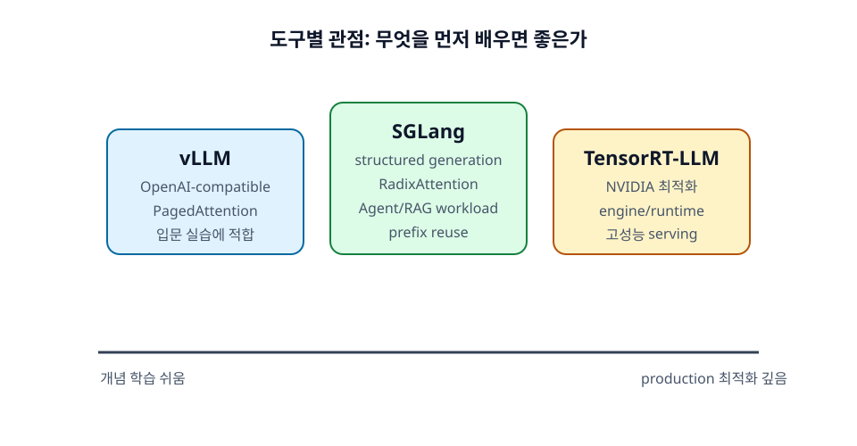

22장. TensorRT-LLM 개념 입문¶
TensorRT-LLM은 NVIDIA GPU에서 LLM 추론을 고성능으로 실행하기 위한 프레임워크다. vLLM이나 SGLang이 입문 실습과 serving 개념 학습에 비교적 접근하기 쉽다면, TensorRT-LLM은 production 성능 최적화와 NVIDIA 생태계 통합 관점에서 중요하다.
이 장은 TensorRT-LLM을 바로 깊게 사용하는 법보다, 입문자가 어떤 위치의 도구로 이해해야 하는지 정리하는 데 초점을 둔다.

학습 목표¶
- TensorRT-LLM의 위치와 목적을 이해한다.
- Engine build와 runtime의 차이를 구분한다.
- 입문자가 처음에 어느 범위까지 알면 되는지 정리한다.
22.1 TensorRT-LLM의 위치¶
NVIDIA 공식 문서에 따르면 TensorRT-LLM은 LLM을 정의하고 NVIDIA TensorRT engine을 build하며, 그 engine을 실행하는 Python/C++ runtime 구성 요소를 제공한다. 즉 "모델을 어떻게 고성능 engine으로 만들고 실행할 것인가"에 초점이 있다.
22.1.1 NVIDIA GPU에 최적화된 추론 프레임워크¶
TensorRT-LLM은 NVIDIA GPU의 kernel, memory, parallelism, quantization 최적화를 적극적으로 활용한다. Production 환경에서 낮은 latency와 높은 throughput을 목표로 할 때 중요한 선택지가 된다.
다만 설정과 build 과정이 vLLM 단일 server 실행보다 복잡할 수 있다. 입문자는 먼저 vLLM으로 serving 개념을 익힌 뒤 TensorRT-LLM의 위치를 이해하는 것이 좋다.
22.1.2 고성능 production serving 지향¶
TensorRT-LLM은 대규모 deployment, multi-GPU inference, quantization, in-flight batching, paged attention 같은 주제를 다룬다. 단순 실험보다 production 성능 최적화에서 가치가 커진다.
운영 조직에서는 TensorRT-LLM을 Triton Inference Server나 NVIDIA 생태계 도구와 함께 검토할 수 있다.
22.1.3 Engine build와 runtime의 차이¶
TensorRT 계열 도구에서는 build 단계와 runtime 단계를 구분하는 것이 중요하다. Build 단계에서는 model을 특정 hardware와 precision, batch/sequence 조건에 맞게 최적화된 engine으로 변환한다. Runtime 단계에서는 이 engine을 load해 실제 inference를 수행한다.
입문자에게 익숙한 Python model.generate()와는 사고방식이 다르다. 먼저 최적화된 실행 계획을 만들고, 그 계획을 빠르게 실행하는 구조에 가깝다.
22.2 주요 최적화 주제¶
TensorRT-LLM에서 다루는 최적화 주제는 앞 장에서 배운 개념과 연결된다. Quantization은 weight memory와 bandwidth를 줄이고, tensor parallelism은 큰 모델을 여러 GPU에 나누며, in-flight batching은 동적 요청 처리 효율을 높인다.
22.2.1 Quantization¶
Quantization은 FP16/BF16보다 낮은 precision으로 weight 또는 activation을 표현해 memory와 bandwidth를 줄이는 기법이다. TensorRT-LLM은 NVIDIA GPU에 맞춘 다양한 quantization 경로를 제공한다.
Quantization을 적용하면 더 큰 모델을 올리거나 throughput을 높일 수 있지만, 정확도 저하 가능성이 있다. 반드시 workload 기준 품질 평가가 필요하다.
22.2.2 Tensor parallelism¶
큰 모델을 여러 GPU에 나누기 위해 tensor parallelism이 사용된다. TensorRT-LLM에서도 multi-GPU inference를 위한 병렬화가 중요한 주제다.
앞에서 배운 것처럼 TP는 빠른 interconnect가 필요하고, TP size를 무작정 키운다고 항상 효율이 좋아지는 것은 아니다.
22.2.3 In-flight batching¶
In-flight batching은 실행 중인 요청 집합에 새 요청을 동적으로 섞어 GPU를 효율적으로 사용하는 방식이다. vLLM의 continuous batching과 같은 문제의식을 공유한다. 요청마다 output 길이가 다른 LLM serving에서 핵심적인 최적화다.
22.2.4 Paged attention¶
Paged attention은 KV cache를 효율적으로 관리하기 위한 개념이다. Long-context와 multi-request serving에서 KV cache memory 관리가 중요하므로, TensorRT-LLM도 이 영역의 최적화를 제공한다.
22.3 입문자가 알아야 할 범위¶
입문자가 처음부터 TensorRT-LLM 내부를 깊게 이해할 필요는 없다. 먼저 추론 시스템의 기본 개념을 익히고, production 성능 최적화가 필요할 때 TensorRT-LLM을 더 깊게 보면 된다.
22.3.1 처음부터 TensorRT-LLM로 시작하지 않아도 된다¶
로컬 실습이나 개념 학습은 vLLM이나 SGLang이 더 빠르게 시작하기 쉽다. TensorRT-LLM은 build, hardware, version compatibility, engine 설정 같은 요소가 많아 초기 학습 부담이 크다.
22.3.2 개념 학습은 vLLM이 쉽다¶
Prefill, decode, KV cache, tensor parallel size, OpenAI-compatible API server 같은 개념은 vLLM으로 쉽게 실습할 수 있다. 먼저 작은 모델로 직접 서버를 띄우고 지표를 관찰하는 것이 좋다.
22.3.3 production 성능 최적화에서는 TensorRT-LLM이 중요해진다¶
서비스 규모가 커지고, NVIDIA GPU에서 latency와 throughput을 극한까지 최적화해야 한다면 TensorRT-LLM의 중요성이 커진다. 이때는 support matrix, release notes, model support, quantization path, serving stack을 공식 문서 기준으로 확인해야 한다.
정리¶
TensorRT-LLM은 NVIDIA GPU에서 LLM 추론을 고성능으로 실행하기 위한 production 지향 프레임워크다. Engine build와 runtime을 구분하며, quantization, tensor parallelism, in-flight batching, paged attention 같은 최적화를 다룬다. 입문자는 vLLM으로 개념을 익힌 뒤, production 최적화 단계에서 TensorRT-LLM을 깊게 보는 흐름이 현실적이다.
점검 질문¶
- TensorRT-LLM은 왜 production 성능 최적화에서 중요해지는가?
- Engine build 단계와 runtime 단계는 왜 구분되는가?
다음 장으로¶
다음 장부터는 성능 측정과 튜닝을 다룬다. TTFT, TPOT, throughput, GPU memory 같은 지표를 어떻게 읽어야 하는지 정리한다.